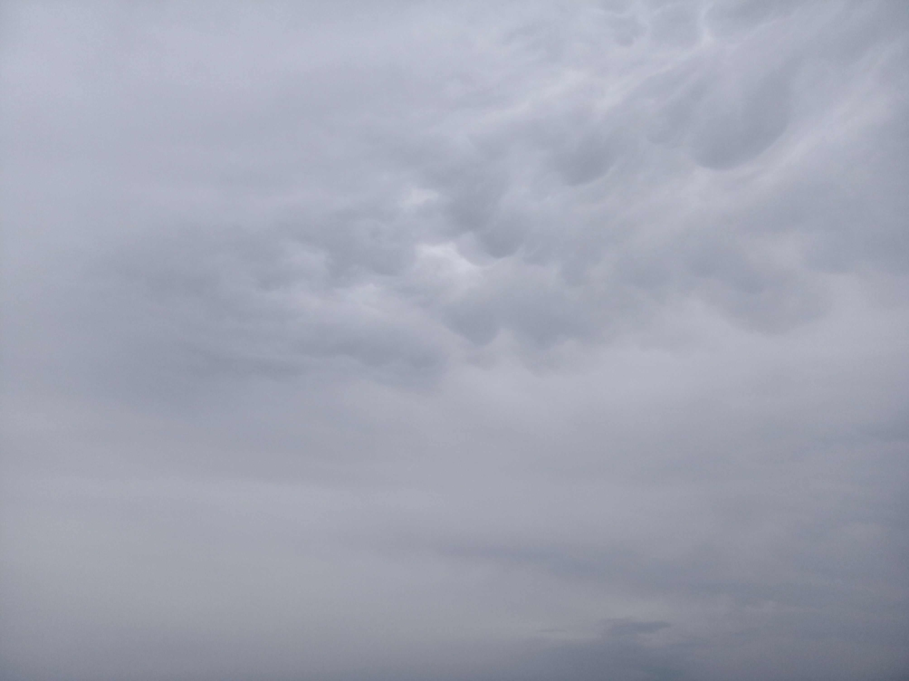
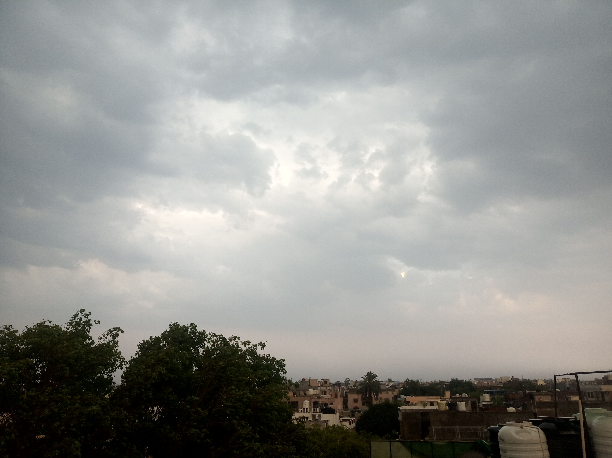
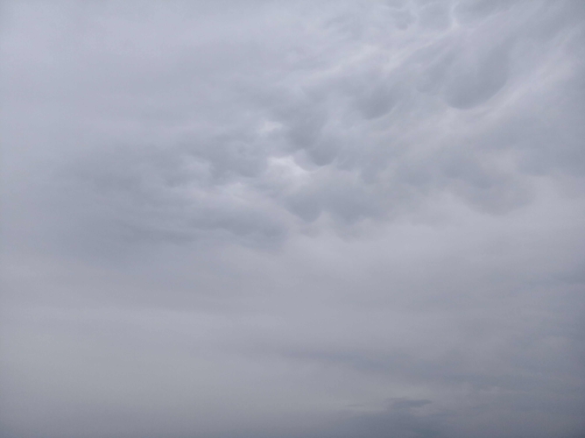
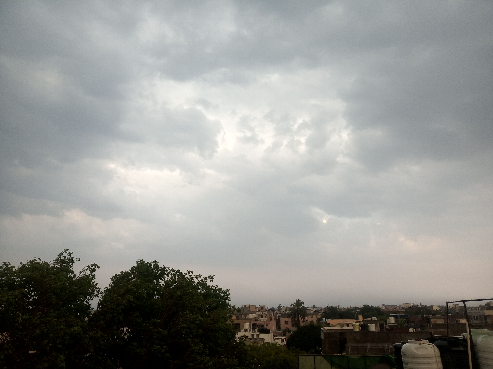
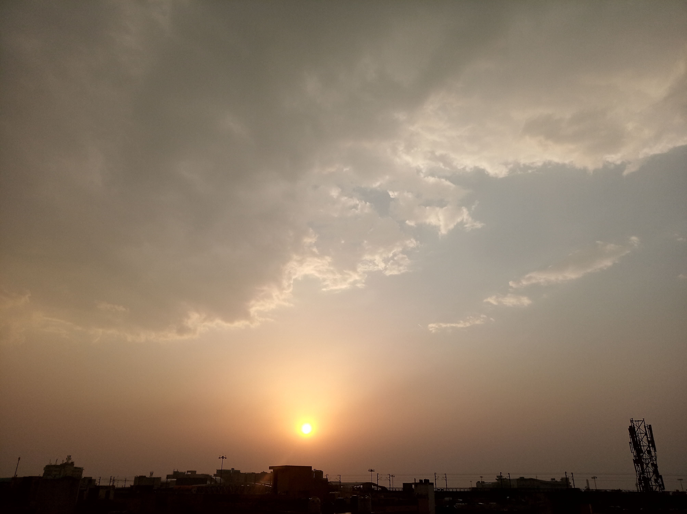

I don't care much for fancy clothes or expensive haircuts but I do like to adorn myself with pretty clouds and birds.


I don't care much for fancy clothes or expensive haircuts but I do like to adorn myself with pretty clouds and birds. I would have liked to take more pictures/videos of the storm but it'd be a damn shame if I wasted my time capturing it for posterity instead of living it in the present.
<*- take me back to the dry wasteland of this home